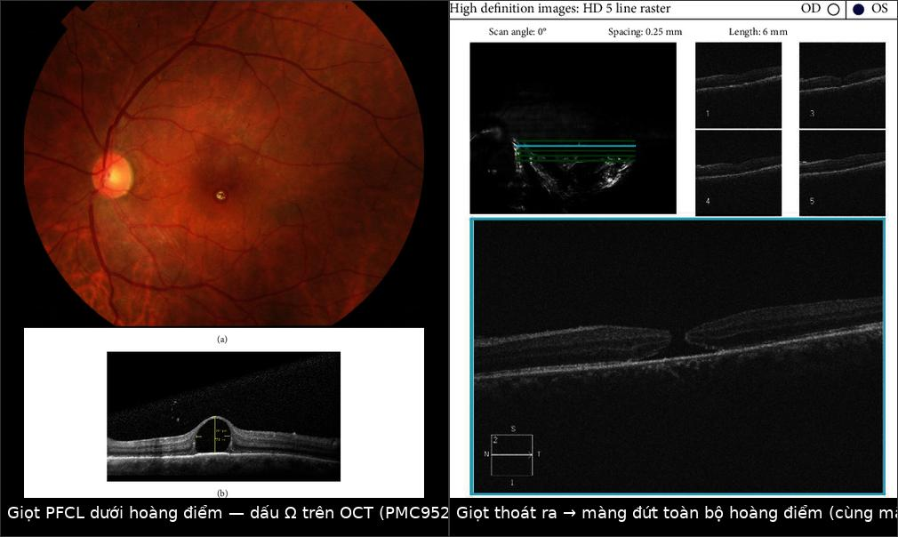
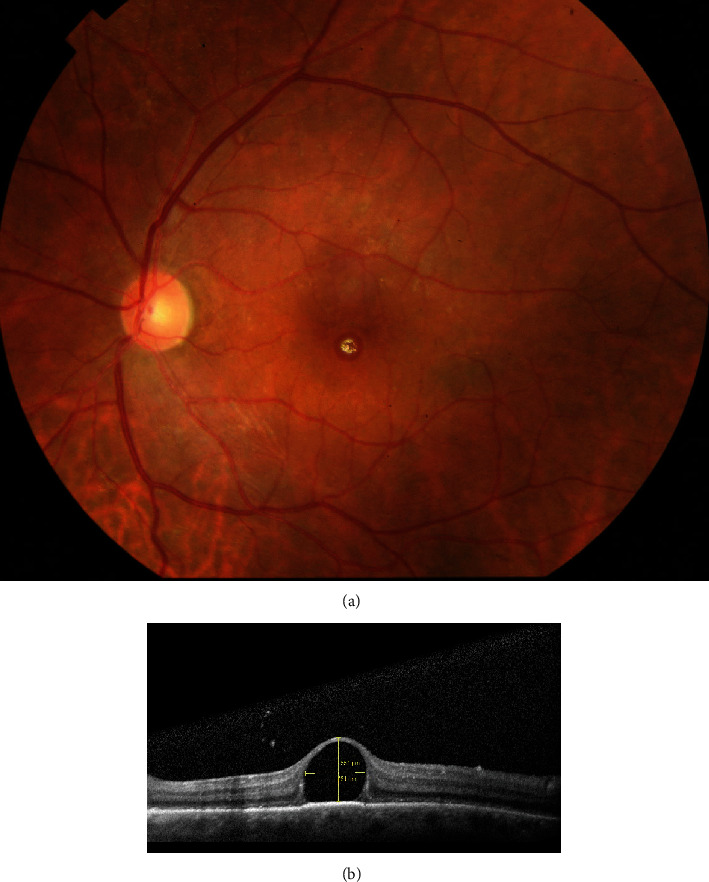
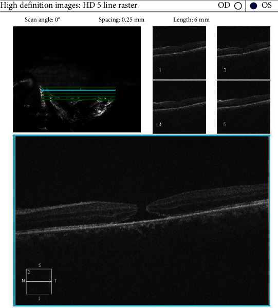
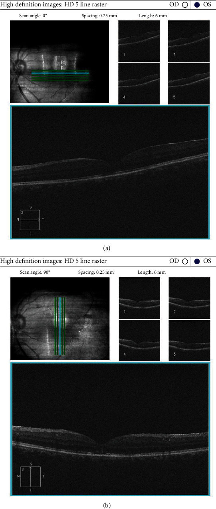
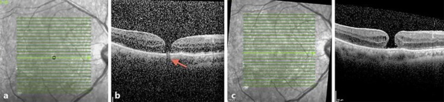

1877 — PFCL tồn lưu dưới võng mạc: dấu Ω trên OCT, giọt “đi về hoàng điểm”, và khi nào phải lấy bằng kim 41 G
Tags: pattern:giot-hyperreflective pattern:dau-ton-luu pattern:bang-che-quang pattern:hoang-diem-hinh-omega pattern:macula-hole vung:hac-vong-mac vung:hoang-diem protocol:OCT-hoang-diem protocol:PPV
Mức chắc chắn (certainty): tổng hợp y văn (literature synthesis) — ghép ca nguyên văn có ảnh giọt PFCL dưới hoàng điểm (dấu Ω) rồi tự thoát và tạo màng đứt toàn bộ hoàng điểm (PMC9529480, CC BY), ca bọt khí C₃F₈ giả PFCL (PMC6760353, CC BY-NC), kỹ thuật hút bằng kim vi mô 41–49 G trên 10 mắt (PMC12707325, CC BY-NC-ND), kỹ thuật BSS dưới võng mạc + rung + trọng lực (PMC7585314, CC BY), tổng quan hệ thống 17 nghiên cứu / 775 mắt về tamponade PFCL trung hạn (PMC12914961, CC BY), và bài mô tả PFCL tiền phòng gây viêm màng bồ đào (PMC11960470, CC BY-NC).
Câu chốt: PFCL nặng hơn nước (tỷ trọng 1,7–2,3 g/cm³) nên khi lọt vào khoang dưới võng mạc, nó lắng xuống thấp nhất — ở đáy ổ dịch dưới hoàng điểm. Trên OCT, giọt PFCL là vật tăng phản xạ, bờ cong, che sáng hoàn toàn phía sau (shadowing), và khi nằm ngay dưới hõm hoàng điểm thì tạo dấu Ω (vòm tăng phản xạ nâng võng mạc lên). Đây là biến chứng âm thầm: bệnh nhân không đau, chỉ thấy nhìn mờ – ám điểm trung tâm – biến dạng, và hậu quả muộn là teo biểu mô sắc tố (RPE) + màng đứt hoàng điểm.
Phân vai với bài khác: 1410 phủ dầu silicone tồn lưu (tỷ trọng 0,97 → nổi, giọt ở tiền phòng/góc); 1865 phủ bong võng mạc tái phát sau tháo dầu; 1873 phủ đục bao sau trên mắt bơm dầu. Bài này chỉ nói PFCL: chất nặng, dùng trong mổ để ép võng mạc, và không bao giờ được để lại dưới võng mạc.
1. Tổng quan bệnh học – cơ chế hình ảnh (TẠI SAO giọt PFCL lại “rơi” xuống dưới võng mạc và sáng trên OCT)
1.1 Vật lý của PFCL — mọi thứ suy ra từ 3 con số
| Tính chất | Giá trị | Hệ quả lâm sàng / hình ảnh |
|---|---|---|
| Tỷ trọng (specific gravity) | 1,7–2,3 g/cm³ (cao hơn nước 1,0) (PMC11960470) | Chìm và lắng ở điểm thấp nhất → ép võng mạc xuống, đẩy dịch dưới võng mạc ra trước; nếu lọt vào khoang dưới võng mạc thì nằm ở đáy, thường ngay dưới hoàng điểm khi bệnh nhân nằm ngửa |
| Sức căng bề mặt | thấp (đặc trưng của nhóm perfluorocarbon; giá trị mN/m khác nhau theo từng loại — chưa đối chiếu được số trong nguồn đã đọc) | Giọt tròn, khó trộn với nước → tạo giọt rời (droplet) thay vì hòa tan; giọt lớn không tự hấp thu |
| Độ nhớt | thấp (nguồn chỉ ghi “low viscosity”, không nêu số cSt — xem ghi chú giới hạn) | Dễ vỡ thành nhiều giọt nhỏ khi qua lỗ rách võng mạc (retinotomy) hoặc khi bơm mạnh → “vệ tinh” giọt (satellite bubbles) |
| Chiết suất / cản quang | khác biệt lớn so với dịch — không cản tia X, nhưng phản xạ mạnh trên OCT | Trên OCT: tăng phản xạ (hyperreflective) + che hoàn toàn tín hiệu phía sau → bóng che (shadowing) là dấu chốt |
- Retinal toxicity — bằng chứng KHÔNG đồng nhất (cần nói rõ): một phía, ca báo cáo dẫn y văn cho rằng PFCL tinh khiết vẫn gây độc võng mạc sau vài ngày khi ở buồng dịch kính và thời gian ngắn hơn khi ở dưới võng mạc — vì vậy tiêu chuẩn vẫn là lấy hết PFCL trước khi kết thúc mổ (PMC9529480). Phía khác, trên mô hình động vật, PFCL trong buồng dịch kính 48 giờ không gây tác dụng phụ, và lượng nhỏ PFCL tồn lưu sau 6 tháng không thấy thay đổi mô học; PFCL ở tiền phòng dung nạp tốt trong thời gian ngắn (PMC11960470). Kết luận thực hành: ngưỡng độc phụ thuộc vị trí và thời gian — dưới võng mạc ≠ tiền phòng, và không có ngưỡng “an toàn” nào cho giọt dưới hoàng điểm.
- Tần suất tồn lưu: PFCL sót lại sau mổ ở khoảng 1–7% mắt (PMC9529480). Đa số ở buồng dịch kính/tiền phòng, nhưng dưới võng mạc là thể nặng nhất.
1.2 Bốn đường giọt PFCL vào được khoang dưới võng mạc
- Qua lỗ rách võng mạc (break/retinotomy): bơm PFCL quá mạnh hoặc đầu cannula chui vào dưới võng mạc → PFCL đi thẳng vào khoang dưới võng mạc.
- Qua retinotomy dẫn lưu: khi PFCL còn trong mắt mà dẫn lưu dịch dưới võng mạc bằng lỗ chọc, PFCL (nặng hơn) chui qua lỗ thay cho dịch.
- Qua vết rách lớn/vùng võng mạc mỏng: rách khổng lồ (giant retinal tear), võng mạc đã bong lâu, mỏng.
- Từ “vệ tinh” giọt nhỏ: giọt nhỏ < 1 mm dễ chui qua lỗ nhỏ; sau mổ di chuyển dần về hoàng điểm (cơ chế chưa rõ, được cho là do dòng dịch dưới võng mạc + trọng lực + chuyển động mắt) (PMC9529480).
1.3 TẠI SAO dấu Ω xuất hiện — hình học, không phải “phù”
- Giọt PFCL nằm giữa lớp cảm thụ (photoreceptor) và RPE → đẩy võng mạc cảm thụ lên thành vòm.
- Trên OCT, giọt tăng phản xạ ở đỉnh vòm, hai bên vòm là võng mạc mỏng đi rõ rệt (do bị giãn) → mặt cắt có dạng chữ Ω (omega) hay “vòm cuốn”.
- Vì sao võng mạc mỏng: tế bào cảm thụ và lớp hạch bị kéo giãn trên một cấu trúc cứng, không co giãn; đồng thời PFCL chặn trao đổi chất giữa RPE và võng mạc → teo RPE khu trú, mất đoạn ellipsoid zone (EZ).
- Hệ quả muộn: vòm căng + võng mạc mỏng + (thường) đã bóc màng giới hạn trong (ILM) trong mổ → màng đứt toàn bộ hoàng điểm (full-thickness macular hole, FTMH); đây chính là diễn tiến trong ca minh họa (PMC9529480).
2. Mẫu hình + chẩn đoán phân biệt theo vị trí giọt (gamut)
2.1 Gamut theo vị trí — “giọt nằm ở đâu” quyết định mức nguy hiểm
- Dưới hoàng điểm (subfoveal): nguy hiểm nhất — teo RPE + FTMH + mất thị lực trung tâm; chỉ định lấy/chuyển dịch giọt.
- Cạnh hoàng điểm (parafoveal) / vùng hoàng điểm: có thể di chuyển vào trung tâm — theo dõi sát bằng OCT, ngưỡng can thiệp thấp hơn.
- Ngoại vi (peripheral): thường theo dõi; nhưng vẫn có thể di chuyển về hoàng điểm nhiều tháng sau → không được “quên”.
- Trong buồng dịch kính (intravitreal): thường lắng đọng ở góc tiền phòng/buồng dịch kính thấp; gây viêm màng bồ đào, tăng nhãn áp, giọt ở tiền phòng (PMC11960470) — điều trị khác (rửa tiền phòng, lấy giọt).
2.2 Gamut theo hình ảnh — “vật tăng phản xạ dưới võng mạc” không chỉ có PFCL
| Thực thể | Vị trí & hình thái | Chốt vào | Chốt loại |
|---|---|---|---|
| PFCL tồn lưu | Dưới võng mạc, giọt tròn/bờ cong đều, tăng phản xạ mạnh, bóng che hoàn toàn; dấu Ω khi dưới hõm | Tiền sử mổ có dùng PFCL + giọt tròn đều + shadowing | Giọt không có bờ cong đều, tăng phản xạ yếu → nghĩ vật liệu khác |
| Bọt khí C₃F₈ kẹt dưới màng/chùm hoàng điểm | Trước võng mạc (pre-retinal/pré-fovéal), bờ cầu vồng sáng, không nằm trong khoang dưới võng mạc | Bờ cầu vồng (rainbow) + nằm TRƯỚC võng mạc + tự tiêu | Nằm dưới võng mạc, không đổi theo tư thế → PFCL |
| Dầu silicone tồn lưu | Nổi (nhẹ hơn nước), giọt tăng phản xạ + tán xạ, thường tiền phòng/góc, hoặc dưới võng mạc ở mắt đã bơm dầu | Tiền sử bơm dầu + giọt ở vị trí cao | Giọt lắng ở đáy → PFCL (xem bài 1410) |
| Xuất huyết dưới võng mạc | Tăng phản xạ ở lớp ngoài, bờ không đều, không che hoàn toàn; theo thời gian đổi cấu trúc | Theo dõi: thay đổi theo thời gian | Giọt giữ nguyên hình dạng nhiều tháng, che hoàn toàn → PFCL |
| Drusen / cặn vôi | Dưới RPE, nhiều ổ, không có shadowing mạnh, đối xứng hai mắt | Nhiều ổ + đối xứng + không tiền sử PFCL | Một giọt đơn độc, rất tăng phản xạ → PFCL |
3. Bảng so sánh phân biệt (ma trận đối chiếu)
| Thực thể (entity) | Hình ảnh điển hình (OCT / đáy mắt) | Chốt vào (rule-in) | Chốt loại (rule-out) | Gợi ý xác nhận |
|---|---|---|---|---|
| PFCL dưới hoàng điểm | Đáy mắt: chấm vàng–trắng sáng ở hõm; OCT: vòm tăng phản xạ + bóng che + dấu Ω, võng mạc phủ mỏng | Tiền sử PPV có PFCL + giọt tròn đều, che hoàn toàn + dấu Ω | Không có tiền sử PFCL; tổn thương thay đổi theo thời gian → xuất huyết/máu | OCT hoàng điểm HD line + chụp đáy mắt màu; hỏi kỹ phẫu thuật viên đã dùng PFCL |
| FTMH do PFCL | Màng đứt toàn bộ ở hõm, bờ dày, gồ, có nang nội võng mạc; giọt có thể đã biến mất | Giọt cũ + màng đứt xuất hiện sau | Màng đứt do co kéo màng trước võng mạc (có màng, không có giọt) | OCT + đáy mắt + so ảnh cũ |
| Bọt C₃F₈ kẹt trước hoàng điểm | Bờ cầu vồng, nằm trước võng mạc, không xuyên qua võng mạc; tự tiêu khi khí hấp thu | Bờ cầu vồng + vị trí trước võng mạc + tự hết | Nằm dưới võng mạc, giữ nguyên hình → PFCL | Chụp lại sau 1–2 tuần; OCT nhiều mặt cắt |
| Dầu silicone dưới võng mạc | Giọt tăng phản xạ kèm tán xạ mạnh, thường ở vùng cao (dầu nổi), có nhũ tương hóa | Tiền sử bơm dầu 5.000 cSt + giọt ở vị trí cao | Giọt ở đáy, che hoàn toàn → PFCL | B-scan (hồi âm mạnh), AS-OCT tiền phòng (bài 1410) |
| Dịch dưới võng mạc đơn thuần | Giảm phản xạ (hyporeflective), bờ mềm, không che phía sau | Giảm phản xạ + không shadowing | Tăng phản xạ + che → vật liệu | OCT theo dõi; đáp ứng với điều trị bong |

Trái: ảnh đáy mắt + OCT — giọt PFCL dưới hõm hoàng điểm, vòm tăng phản xạ, dấu Ω, võng mạc phủ mỏng. Phải: OCT sau đó — giọt đã biến mất, xuất hiện màng đứt toàn bộ hoàng điểm. Nguồn: Case Reports in Ophthalmological Medicine 2022, PMC9529480, CC BY 4.0. Ảnh ghép letterbox, giữ nguyên tỷ lệ.3.1 Ba dấu hiệu đọc thành lời
- Dấu Ω (omega sign): vòm tăng phản xạ nâng võng mạc tại hõm; hai “chân” vòm là võng mạc mỏng, mất EZ — đây là dấu đặc hiệu vị trí dưới hoàng điểm.
- Bóng che (posterior shadowing): phía sau giọt mất toàn bộ tín hiệu (RPE, choroid không thấy) — dấu phân biệt với dịch (giảm phản xạ, không che) và với xuất huyết (tăng phản xạ nhưng không che hoàn toàn).
- Bờ cong đều + giữ nguyên hình dạng theo thời gian: giọt PFCL không tự biến mất (trừ ca hiếm tự thoát); tổn thương máu/dịch thay đổi sau vài tuần.
4. Protocol chụp + theo dõi + kỹ thuật lấy giọt
4.1 Chụp và ghi nhận (tối thiểu)
- OCT hoàng điểm SD-OCT, HD line raster (khoảng cách lát 0,25 mm, chiều dài 6 mm) — đủ để phát hiện giọt ≥ 50 µm; ghi vị trí (dưới hõm/cạnh hõm/ngoại vi), kích thước giọt (µm), độ dày võng mạc phủ, có/không FTMH.
- Ảnh đáy mắt màu + chụp hồng ngoại (infrared): giọt PFCL cho chấm sáng trên ảnh màu; hồng ngoại giúp thấy giọt nhỏ.
- B-scan siêu âm khi không thấy được đáy mắt (đục thể thủy tinh, bơm dầu) — PFCL hồi âm rất mạnh.
- Ghi vào hồ sơ: dùng PFCL loại nào, số lần, có hút hết bằng đầu cannula thẳng không — vì chẩn đoán tồn lưu phụ thuộc tiền sử mổ, bác sĩ CĐHA không tự suy ra được.
4.2 Ai cần lấy — ngưỡng thực hành
| Tình huống | Hướng xử trí | Căn cứ |
|---|---|---|
| Giọt ngoại vi, không triệu chứng | Theo dõi OCT mỗi 1–3 tháng (vì có thể di chuyển về hoàng điểm) | PMC9529480 |
| Giọt cạnh hoàng điểm | Theo dõi sát; lấy khi có dấu hiệu tiến sát hõm hoặc võng mạc phủ mỏng | PMC9529480, PMC12707325 |
| Giọt dưới hoàng điểm (dấu Ω) | Lấy/chuyển dịch giọt: hút trực tiếp bằng kim 41 G hoặc 41–49 G; hoặc bơm BSS dưới võng mạc tạo “bóng” hoàng điểm rồi để giọt trôi ra retinotomy | PMC12707325, PMC7585314 |
| FTMH đã hình thành | Cân nhắc theo dõi nếu nhỏ và không triệu chứng; mổ (bóc ILM/bơm khí) nếu lớn; đã có ca tự đóng sau khi giọt thoát | PMC9529480 |
4.3 Kỹ thuật hút — số liệu để chọn kim
- Thể tích chuẩn 250 µL PFCL, áp lực 200 mmHg: 30 G = 0,22 phút, 41 G = 0,33 phút, 43 G = 0,78 phút (PMC12707325).
- Kim 49 G cần chân không tối đa 650 mmHg, trung bình 3,34 phút cho 250 µL — chậm hơn nhiều nhưng xuyên qua võng mạc ít chấn thương nhất.
- 10 mắt được hút PFCL dưới võng mạc bằng kim vi mô: 100% thành công, thị lực trung bình cải thiện −0,08 logMAR (± 0,12) — tức không kỳ vọng hồi phục lớn, mục tiêu là ngăn teo RPE và màng đứt tiến triển (PMC12707325).
- Kỹ thuật BSS dưới võng mạc: bóc ILM trên điểm chọc, bơm BSS áp lực thấp 8 psi bằng 41 G để bong hoàng điểm có kiểm soát, tạo retinotomy nhỏ hơn giọt một chút, cho giọt trôi ra bằng rung + trọng lực, rồi hút trên bề mặt võng mạc (PMC7585314).
4.4 Sơ đồ theo dõi (dùng cho phòng khám)
flowchart TD
A[Bệnh nhân đã mổ bong võng mạc có dùng PFCL] --> B[OCT hoàng điểm + ảnh đáy mắt ở lần khám đầu]
B --> C{Có giọt tăng phản xạ dưới võng mạc?}
C -->|Không| D[Theo dõi thường quy theo lịch bong võng mạc]
C -->|Có| E{Giọt ở đâu?}
E -->|Ngoại vi, không triệu chứng| F[Theo dõi OCT 1-3 tháng, dặn báo nếu nhìn mờ hoặc biến dạng]
E -->|Cạnh hoàng điểm| G[Theo dõi sát 1 tháng; can thiệp nếu tiến vào hõm]
E -->|Dưới hoàng điểm, dấu omega| H[Chỉ định lấy: kim 41-49 G hoặc BSS dưới võng mạc + retinotomy]
F --> I{Giọt di chuyển vào trung tâm?}
I -->|Có| H
H --> J[OCT sau mổ 1 tuần, 1 tháng, 3 tháng: kiểm tra màng đứt, EZ, teo RPE]
5. Biến thể bình thường và cạm bẫy
- Giọt PFCL KHÔNG tự tan. Khác với bọt khí (tự tiêu trong 2–8 tuần tùy loại khí), PFCL là chất lỏng không hấp thu — nếu thấy giọt “biến mất”, hoặc đã thoát ra qua màng đứt (như ca minh họa), hoặc đã di chuyển ra ngoại vi, hoặc chẩn đoán ban đầu sai (thực ra là bọt khí).
- Cạm bẫy “bọt khí giả PFCL”: bọt C₃F₈ kẹt trước hoàng điểm có thể trông như giọt dưới võng mạc; điểm khác: bờ cầu vồng nhiều màu, nằm trước võng mạc, và tự tiêu (PMC6760353) → chụp lại 1–2 tuần thay vì can thiệp ngay.
- Cạm bẫy “một lát OCT”: giọt nhỏ có thể nằm giữa hai lát của raster dày → luôn dùng HD line 0,25 mm hoặc volume scan khi có tiền sử PFCL.
- Cạm bẫy “cho rằng mắt đã ổn định”: giọt ngoại vi di chuyển về hoàng điểm muộn, kể cả sau nhiều tháng → theo dõi dài, không chỉ lần khám đầu.
- Cạm bẫy “OCT đẹp sau mổ = không còn PFCL”: PFCL có thể còn ở tiền phòng/góc gây viêm màng bồ đào, tăng nhãn áp dù hoàng điểm sạch (PMC11960470) → soi góc (gonioscopy) và AS-OCT tiền phòng khi có triệu chứng.
- Biến thể dễ nhầm: drusen tăng phản xạ mạnh ở người trẻ có thể trông giống giọt nhỏ; khác ở chỗ nhiều ổ, dưới RPE, không shadowing mạnh, đối xứng.
- Sai sót hệ thống: PFCL tồn lưu là biến chứng “người ta không thấy vì không tìm” — khi báo cáo OCT sau mổ bong võng mạc, phải chủ động mô tả “có/không có vật tăng phản xạ dưới võng mạc” thay vì chỉ “võng mạc áp”.
6. Tự lượng giá — Blind Quiz
Ca 1 — Nam 52 tuổi, mổ bong võng mạc + bơm dầu silicone 1 tuần trước, nay nhìn mờ và biến dạng. Hình dưới có gì bất thường ở hõm hoàng điểm?

- Gợi ý: không đau; thị lực đếm ngón tay; tiền sử bong võng mạc toàn bộ, có dùng PFCL trong mổ.
- Câu hỏi: (1) Mô tả tổn thương trên OCT. (2) Vì sao võng mạc phía trên giọt mỏng? (3) Ba chẩn đoán phân biệt và dấu chốt?
Bấm để hiện đáp án (findings + chẩn đoán)
- Findings: đáy mắt có chấm vàng–trắng sáng đúng hõm; OCT (b) cho vòm tăng phản xạ dưới hõm với bóng che hoàn toàn phía sau → dấu Ω; võng mạc phủ mỏng rõ rệt (thước đo trong ảnh gốc đặt ở đỉnh vòm).
- Vì sao mỏng: giọt cứng đẩy võng mạc lên + chặn trao đổi chất với RPE → teo và mất EZ.
- Phân biệt: (a) bọt khí C₃F₈ — bờ cầu vồng, trước võng mạc, tự tiêu; (b) dầu silicone dưới võng mạc — giọt ở vị trí cao, có tán xạ; (c) xuất huyết dưới võng mạc — thay đổi theo thời gian, không che hoàn toàn. Dấu chốt: giọt tròn đều + che hoàn toàn + tiền sử PFCL.
- Nguồn: Case Reports in Ophthalmological Medicine 2022, PMC9529480, CC BY 4.0.
Ca 2 — Cùng mắt sau 3 tuần: bệnh nhân đột ngột mất thị lực trung tâm, ám điểm tuyệt đối. Giọt đã đi đâu?

- Câu hỏi: (1) Chẩn đoán trên OCT. (2) Vì sao giọt “biến mất” mà bệnh nặng hơn? (3) Thái độ xử trí?
Bấm để hiện đáp án
- Findings: màng đứt toàn bộ hoàng điểm (FTMH); không còn giọt dưới võng mạc.
- Cơ chế: sức căng bề mặt của giọt tạo lực kéo ngang trên võng mạc đã mỏng (và đã bóc ILM trong mổ) → rách hõm; giọt thoát qua lỗ vào buồng dịch kính rồi bị loại bỏ khi tháo dầu.
- Xử trí trong ca gốc: theo dõi (không bóc ILM thêm, không ghép); sau 4 tháng tháo dầu → màng đứt tự đóng, thị lực 0,4 → 0,7 sau 3 tháng.
- Bài học: FTMH do PFCL có thể tự đóng, nhưng không được chờ nếu giọt còn dưới hõm — lấy giọt trước khi màng đứt hình thành.
- Theo dõi tiếp (Hình 3 của ca gốc): sau khi tháo dầu, màng đứt tự đóng, hõm hoàng điểm phục hồi:

OCT raster ngang và dọc: hõm hoàng điểm phục hồi, không cần bóc ILM thêm.- Nguồn: PMC9529480, CC BY 4.0.
Ca 3 — Bệnh nhân mổ bong võng mạc 6 tuần trước, OCT có “chấm tối + bóng che” ở hõm, không rõ đã dùng PFCL hay khí. Làm sao phân biệt?

- Câu hỏi: (1) Dấu hiệu nào giúp phân biệt bọt khí với giọt PFCL? (2) Vì sao không can thiệp ngay? (3) Theo dõi thế nào?
Bấm để hiện đáp án
- Findings: ảnh hồng ngoại có chấm giảm phản xạ ở hõm; OCT qua hõm cho màng đứt toàn bộ + bóng che do mảnh bọt khí C₃F₈ kẹt trước võng mạc (mũi tên đỏ) — không phải giọt PFCL dưới võng mạc.
- Dấu phân biệt: bọt khí nằm TRƯỚC võng mạc, bờ cầu vồng, tự tiêu; PFCL nằm DƯỚI võng mạc, bờ cong đều, không biến mất.
- Xử trí: chụp lại sau 1–2 tuần — bọt khí hấp thu, hình ảnh thay đổi; can thiệp “lấy giọt” trong trường hợp này là mổ oan.
- Nguồn: Case Reports in Ophthalmology 2019, PMC6760353, CC BY-NC 4.0 (nguyên bản, không chỉnh sửa).
Bài liên quan chéo
- 400 – Tổng quan Mắt & thị giác
- 1410 – Lấy dầu silicone & biến chứng dầu tồn lưu (chất nổi, giọt ở tiền phòng; so sánh trực tiếp)
- 1865 – Bong võng mạc tái phát sau tháo dầu (bối cảnh mổ bong phức tạp)
- 1875 – Phù hoàng điểm sau phacovitrectomy trên mắt bơm dầu (OCT hoàng điểm sau mổ)
- 1873 – Đục bao sau trên mắt bơm dầu & YAG
- 1449 – Tiêm nội nhãn ở bệnh nhân dùng thuốc chống đông (thủ thuật trong mắt, biến chứng)
Ảnh
1877_pfcl_OCT-PMC9529480-Fig1.jpg— (a) ảnh đáy mắt: chấm PFCL dưới hõm; (b) OCT: dấu Ω, võng mạc phủ 32 µm. CC BY 4.0.1877_pfcl_OCT-PMC9529480-Fig2.jpg— OCT: màng đứt toàn bộ hoàng điểm sau khi giọt thoát. CC BY 4.0.1877_pfcl_OCT-PMC9529480-Fig3.jpg— OCT: màng đứt tự đóng, hõm phục hồi. CC BY 4.0.1877_pfcl_OCT-PMC6760353-Fig2.jpg— bọt C₃F₈ giả PFCL: hồng ngoại + OCT có bóng che. CC BY-NC 4.0.composite_pfcl-omega-vs-macula-hole.jpg— ghép đối chiếu hai thì (letterbox, không crop). CC BY 4.0.- Nguồn + giấy phép từng file:
images/CREDITS.md.
Không dùng để chẩn đoán độc lập khi chưa có người hướng dẫn.